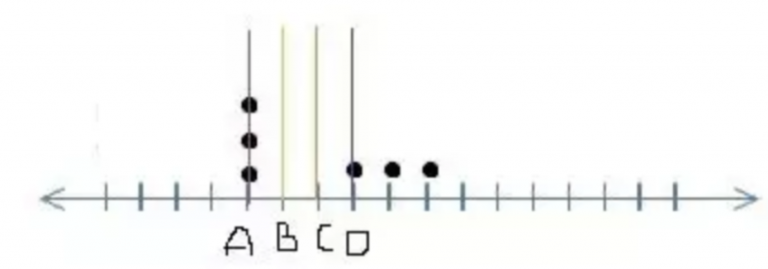
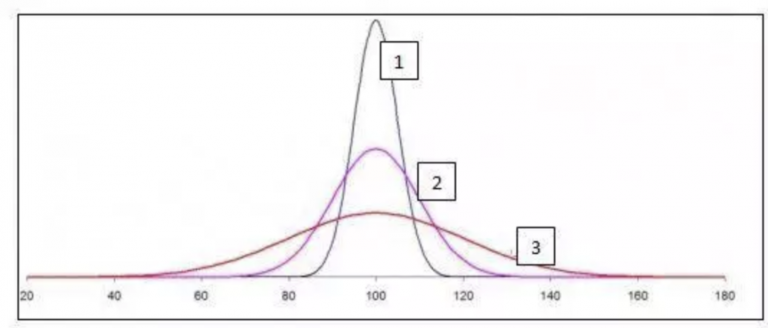
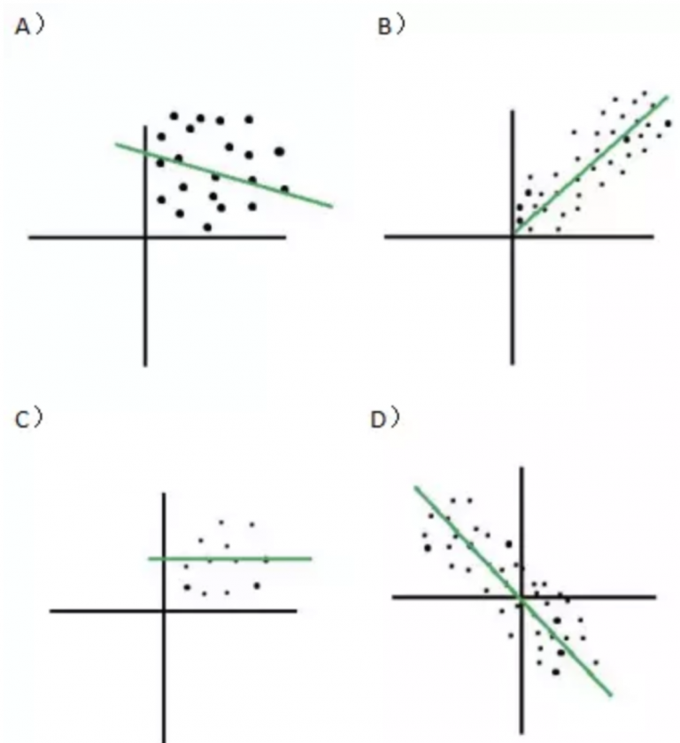
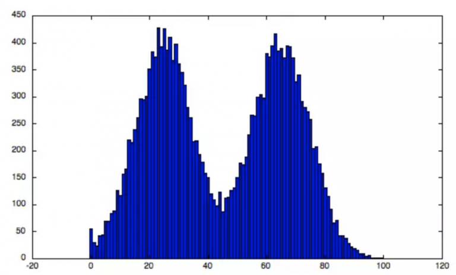
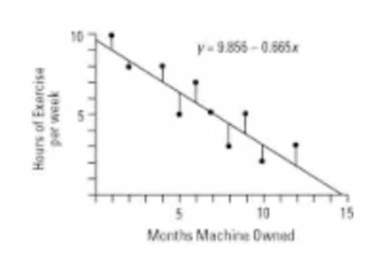
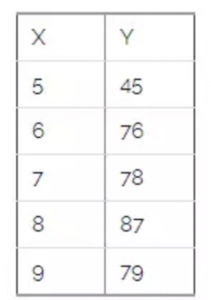

统计学是数据科学和任何数据分析的基础。良好的统计学知识可以帮助数据分析师做出正确的商业决策。一方面，描述性统计帮助我们通过数据的集中趋势和方差了解数据及其属性。另一方面，推断性统计帮助我们从给定的数据样本中推断总体的属性。了解描述性和推断性统计学知识对于立志成为数据科学家或分析师至关重要。为了帮助您提高统计学知识，我们进行了这次实践测试。测试涉及描述性和推断性统计。测试题提供了答案和解释，以防你遇到卡壳的问题。
超过450人参加了这次测试，获得的最高分是37分。以下是一些关于分数分布的统计数据：
平均得分：20.40
得分中位数：23
得分众数：25
1、哪些统计方法用来度量数据的集中趋势？
A）平均值和正态分布
B）平均值，中位数和众数
C）众数，Alpha和极差
D）标准差，极差和平均值
E）中位数，极差和正态分布
答案：（B）
平均值，中位数和众数是分析数据集中趋势的三种统计方法。 我们使用这些测量方法来查找数据集的中心值，以及总结整个数据集。
2、给出5个数字：（5,10,15,5,15），求单项数据与平均值之间的离差的和。
A）10
B）25
C）50
D）0
E）以上都没有
答案：（D）
单项数据的离差之和始终为0。
3、每年进行一次考试。 考试的平均分为150分，标准差为20。如果Ravi的Z值为1.50，他的得分是多少？
A）180
B）130
C）30
D）150
E）以上都没有
答案：（A）
X =μ+Zσ，其中μ是平均值，σ是标准差，X是我们计算的分数。 因此X = 150 + 20 * 1.5 = 180
4、如果数据集中的单项数值发生变化，则以下集中趋势中的哪个测量值一定会发生变化？
A）平均值
B）中位数
C）众数
D）上述所有
答案：（A）
如果我们改动数据集中的任何值，数据集的平均值一定会改变。 因为平均值是由数据集中的所有值汇总求得的，所以数据集中的每个值都对平均值起作用。 中位数和众数可能会改变，也可能不会随数据集中的单个值而改变。
5、下图所示，标尺的垂线上有六个数据点。以下哪一条垂直线代表给定数据点的平均值？其中标尺的比例单位相同。

A）A
B）B
C）C
D）D
答案：（C）
从视觉上观察数据点做判断有点困难， 我们可以通过简单的取值来理解平均值。 令A为1，B为2，C为3等。 所示的数据值将变为{1,1,1,4,5,6}，这意味着是18/6 = 3即C.
6、如果正偏态分布的中位数为50，则下列哪个选项是正确的？
A）平均值大于50
B）平均值小于50
C）众数小于50
D）众数大于50
E）A和C
F）B和D
答案：（E）
以下是负偏态分布，正态分布和正偏态分布曲线：正如我们所看到的正偏态分布的曲线，众数 <中位数 <平均值。 所以如果中位数是50，平均值将超过50，众数将小于50。
7、以下哪一项是下图分布的中位数的可能值？
A）32
B）26
C）17
D）40
答案：（B）
中位数是其前后值大约一半的值。 小于25的数值是（36 + 54 + 69 = 159），大于30的值的数量是（55 + 43 + 25 + 22 + 17 = 162）。 所以中位数应该在25到30之间。因此26是中位数的可能值。
8、计算样本标准差时，下列哪项陈述对于贝塞尔校正（Bessel’s correction）是正确的？
不论对样本数据执行任何操作，都要使用贝塞尔校正。
当我们尝试用样本估计总体的标准差时，使用贝塞尔校正。
贝塞尔校正减少了标准差的偏差。
A）只有2
B）只有3
C）2和3
D）1和3
答案：（C）
与我们不应该总是做贝塞尔校正这个普遍观点相反。 当我们用样本的标准差来估算总体的标准差时，基本上是要做贝塞尔校正的。贝塞尔校正可以修正样本的标准差使其更接近总体的情况。
9、如果公式中的分母使用（n-1）计算数据集的方差，则下列哪个选项正确？
A）数据集是一个样本
B）数据集是一个总体
C）数据集可以是样本或总体
D）数据集来自人口普查
E）以上都不正确
答案：（A）
如果公式中的方差分母使用了n-1，则表示该集合是样本。 我们一般用离差的平方和除以n-1计算平均值，来估算总体的偏差。
当我们使用总体数据时，可以直接将离差的平方和除以n而不是n-1。
10、[对错判断]标准差可以为负值。
A）正确
B）错误
答案：（B）
由于标准差是经过平方，累加，然后再开方，因此标准差不可能是负的。
11、标准差对异常值是否稳健？A）是B）否
答案：（B）
按照标准差公式，可以发现过高或过低的值会增加标准差，尽管标准差与平均值非常不同。 因此，异常值将影响标准差。
12、对于下面的正态分布，以下哪个选项成立？
σ1，σ2和σ3分别表示曲线1，2和3的标准差。

A）σ1>σ2>σ3
B）σ1<σ2<σ3
C）σ1=σ2=σ3
D）以上皆否
答案：（B）
从正态分布的定义来看，我们知道所有这3种形状的曲线下的面积为1。 曲线3更平坦，因而更分散（大多数值在40-160之间），因此它的标准差最大。 类似地，曲线1的范围非常窄，并且所有值都在80-120的小范围内。 因此，曲线1的标准差最小。
13、在98％的置信区间，双尾检验Z的临界值是多少？
A）+/- 2.33
B）+/- 1.96
C）+/- 1.64
D）+/- 2.55
答案：（A）
我们需要查看Z值表来回答这个问题。 对于双尾检验和98％置信区间，我们应该检查Z值之前的面积为0.99，因为平均值的左侧和右侧分别是1％。 因此，我们应该检查区域 > 0.99的Z值。 该值为+/- 2.33。
14、[对错判断]标准正态分布的曲线是对称的，对称轴为0，曲线下面的面积为1。
A）正确
B）错误
答案：（A）
由正态分布曲线的定义得知，曲线下面的面积为1，对称轴为零， 平均值、中位数和众数都等于0。平均值左侧的面积等于平均值右侧的面积。 因此它是对称的。
问题背景15-17
研究表明，在学习时听音乐可以提高记忆力。 为了证明这一点，研究人员获得了36名大学生的样本，给他们做了一个标准记忆测试，同时听一些背景音乐。 在正常情况下（没有音乐），测试得到的平均分为25，标准偏差为6。实验后样本（有音乐）的平均分为28。
15、这种情况下的零假设是什么？
A）学习时听音乐不会影响记忆力。
B）学习时听音乐可能会使记忆力退化。
C）在学习中听音乐可能会提高记忆力。
D）在学习期间听音乐不会提高记忆力，还可能会使记忆力变得更糟。
答案：（D）
零假设通常是假设声明，测量现象彼此之间没有关系。 这里的零假设是听音乐和记忆力的提高之间没有关系。
16）什么是第一类错误？
A）学习时听音乐可以提高记忆力，且该结论正确。
B）学习时听音乐可以提高记忆力，但实际上记忆力并没有提高。
C）学习时听音乐不会提高记忆力，但实际上记忆力提高了。
答案：（B）
第一类错误意味着当假设的结论实际上为真时，我们却拒绝了零假设。 这里的零假设是音乐不会提高记忆力。 第一类错误是我们拒绝了零假设，也就是说结论显示音乐提高了记忆力，但实际上它并没有提高记忆力。
17）执行Z检验后，我们可以得出什么结论？
A）听音乐不会提高记忆力。
B）听音乐会显著提高记忆力。
C）信息不足以作任何结论。
D）以上都不对
答案：（B）
我们在给定的情况下进行Z检验。 我们知道零假设是听音乐不会提高记忆力。
备择假设是听音乐确实提高了记忆力。
在这种情况下，标准误差即：
来自这个总体的样本的平均值为28的Z值得分为：
从Z值表中可以看出，α= 0.05（单尾）的Z临界值为1.65。因此，由于观察到的Z值大于Z临界值，所以我们可以拒绝零假设，可以下结论说听音乐确实改善了记忆力，置信度是95％。18）研究者从他的分析中得出结论：安慰剂治疗了艾滋病。 他犯了哪一类的错误？A）第一类错误
B）第二类错误
C）以上都不是。 研究人员没有发生错误。
D）不能确定
答案：（D）
根据定义，第一类错误是假设实际是真时，拒绝零假设；第二类错误是假设实际是假时，接受零假设。 在这种情况下定义错误，我们需要首先定义零假设和备择假设。
19）当我们往数据中引入一些异常值时，置信区间会发生什么变化？
A）置信区间对异常值是稳健的
B）置信区间随着异常值的引入而增加。
C）随着异常值的引入，置信区间将减少。
D）在这种情况下，我们无法确定置信区间。
答案：（B）
我们知道置信区间取决于数据的标准差。 如果我们将异常值引入数据，则标准差增加，因此置信区间也增加。
问题背景20-22
医生想通过控制饮食来降低所有患者的血糖水平。 他发现所有患者的血糖含量平均值为180，标准差为18。然后有9名患者开始控制饮食，他观察到样本的平均值为175。现在，他正在考虑建议让他的所有患者都去控制饮食。
备注：置信区间99％。
20）平均值的标准误差是多少？
A）9
B）6
C）7.5
D）18
答案：（B）
平均值的标准误差是标准差除以样本量的平方根。即：
21）当所有患者都开始控制饮食后，血糖平均值降至175以下的概率是多少？
A）20%
B）25%
C）15%
D）12%
答案：（A）
这个问题需要计算出干预后所有患者的平均血糖值为175的概率， 可以通过给定的平均值计算出Z值。
查Z值表，得到Z对应的数值 = -0.833〜0.2033。因此，如果每个人都开始控制饮食，那么所有患者平均血糖值降至175的概率大约为20％。22）以下哪项陈述是正确的？
A）医生有有效的证据证明控制饮食可以降低血糖水平。
B）医生没有足够的证据证明控制饮食能够降低血糖水平。
C）如果医生用同样的方法让所有患者控制饮食，那么平均血糖将会降至160以下。
答案：（B）
我们需要核实是否有足够的证据来拒绝零假设。 零假设是控制饮食对血糖没有影响。 这是一个双尾检验。 双尾检验的Z临界值为±2.58。我们计算出的Z值是-0.833。由于Z值 < Z临界值，因此我们没有足够的证据证明控制饮食能够降低血糖。
问题背景23-25
一位研究人员正在试图检验两种不同教学方法的效果。 他把20名学生分成两组，每组10人。 对于第1组，教学方法是使用有趣的例子。 对于第2组，教学方法是使用软件来帮助学生学习。 两组学生经过20分钟的授课后，所有学生进行了考试。
我们想计算两组学生的考试得分是否有显著的差异。
已知如下信息：
• α= 0.05，双尾检验。
• 第1组的测试平均分数= 10
• 第2组的测试平均分数= 7
• 标准误差= 0.94
23） t-统计量的值是什么？
A）3.191
B） 3.395
C）不能确定
D）以上都不是
答案：（A）
t统计量是指两组之间相差多少个标准误差。
=（10-7）/ 0.94 = 3.191
24）两组的考试得分是否有显著差异？
A）有
B）没有
答案：（A）
零假设是两组之间没有差异，而被择假设是两组之间有显著差异。
在α= 0.05条件下的双尾检验的t临界值为±2.101。 得到t统计量为3.191。 由于t统计量大于t临界值，因此我们可以拒绝零假设，认为这两组在95％的置信区间上有显著差异。
25) 考试得分的变异性在多大比例上可由教学方法不同来解释？
A) 36.13
B) 45.21
C) 40.33
D) 32.97
答案：（A）
R2的值给出了分数变异性的百分比。R2的公式如下：
在本题中，自由度是10 + 10 -2，因为两组各有10人，所以自由度是18。
26）[对错判断] F统计量不能为负。
A）正确
B）错误
答案：（A）
F统计量是我们对不同组进行方差分析，了解不同组之间的差异时得到的值。 F统计量是组间变异与组内变异的比值。
下面是F统计量的公式：
由于分子和分母具有平方项，因此F统计量不能为负。
27）下列哪张图具有很强的正相关性？

答案：（B）强正相关需要满足下列条件：如果x增加，y也增加；如果x减少，y也减小。 在这种情况下，线的斜率为正，数据点将显示出明确的线性关系。 选项B显示出很强的正相关关系。28）两个变量（Var1和Var2）之间的相关性为0.65。 如果给Var1中的所有值加上2后，相关系数将会___？A）增加
B）减少
C）以上都没有
答案：（C）
任一变量增加或减去一个恒定值，相关系数将保持不变。相关性的计算公式可以很容易地帮助我们理解这一点。
如果我们给变量的所有值都加上一个常数值，则这个变量将发生相同的变化量，变量的差异将保持不变。 因此，相关系数不会变化。
29）据观察发现，数学考试成绩与在学生在考试当天进行体育运动存在非常高的相关性。 你能从中推断出什么结论？1. 高度相关意味着运动后考试成绩会很高。
相关性并不意味着因果关系。
相关性衡量了运动量与考试成绩之间的线性关系的强度。
A）只有1
B）1和3
C）2和3
D) 以上陈述都对
答案：（C）
虽然有时直觉上强相关性就表明因果关系，但实际上相关性并不意味着任何的因果推论。 它只是告诉我们两个变量之间的关系的强度。 如果这两个变量同时改变，那么它们之间存在高度的相关性。
30）如果数学考试成绩与体育运动之间的相关系数（r）是0.86，那么用体育运动来解释数学考试成绩的变异性的百分比是多少？
A）86%
B）74%
C）14%
D）26%
答案：（B）
变异性的百分比R2由相关系数的平方得到， 该比值可以解释由一个变量引起另一个变量变异的比例。 因此，用运动解释数学考试成绩的变异性为0.862。
31）下列选项对于直方图的描述，哪个是正确的？

A）上述直方图是单峰的
B）上述直方图是双峰的
C）上述给出的不是直方图
D）以上都不对
答案：（B）
上述直方图是双峰的。 我们可以看到直方图有两个峰值，表示有两个高频。
32）考虑回归直线方程y = ax + b，其中a是斜率，b是截距。 如果我们知道斜率的值，那么通过下列哪个选项，我们一定可以找到截距的值？
A）把值（0, 0）代入到回归直线方程中
B）代入回归拟合线上任意一点的值，计算b的值
C）使用方程中的x和y的平均值，和a一起计算得到b
D）以上都不对
答案：（C）
使用普通最小二乘回归法的直线始终通过x和y的平均值。 如果我们知道线上的任意一个点和斜率的值，就可以很容易地找到截距。
33）当我们向线性回归模型引入更多的变量时会发生什么？
A）R2可能增加或保持不变，调整后的R2可能增加也可能减少。
B）R2可能增加也可能减少，但调整后的R2总是增加。
C）当为模型引入新的变量时，R2和调整后的R2总是增加。
D）R2和调整后的R2都有可能增加或减少，依赖于引入的变量。
答案：（A）
R2总是增加或至少保持不变，因为使用普通最小二乘法，向模型添加更多的变量，方差的总和不会增加，R2也没有减少。调整后的R2是在模型中根据预测变量的数量进行调整后，R2的修改版本。只有当新的预测变量改进了模型且超过预期时，调整后的R2才会增加。当预测变量对模型的改进低于预期时，调整后的R2将减少。
34）在散点图中，回归线上面或下面的点到回归线的垂直距离称为____？

A）残差
B）预测误差C）预测D）A和B
E）以上都不是
答案：（D）
我们从图中看到的线是从回归线到点的垂直距离， 这些距离被称为残差或预测误差。
35）在最小二乘法的一元线性回归方程中，相关系数与决定系数之间的关系是？
A）两者无关
B）决定系数是相关系数的平方
C）决定系数是相关系数的平方根
D） 两者都是相同的
答案：（B）
决定系数是R2，告诉我们自变量解释因变量的变异程度，也是相关系数的平方。 在多元回归的情况下，R2也可表示成解释方差之和与方差总和的比值。
36）显著性水平与置信度之间的关系是什么？
A）显著性水平=置信度
B）显著性水平= 1-置信度
C）显著性水平= 1 /置信度
D）显著性水平= sqrt（1 – 置信度）
答案：（B）
显著性水平就是1-置信度。 如果显著性水平为0.05，那么相应的置信度为95％或0.95。显著性水平就是当零假设为真时，获得极端值或超过极端值的结果的概率。 置信区间是总体参数可能值的范围，如总体平均值。 例如，如果你在95％的置信区间内计算出冰淇淋的平均价格，那么说明你有95％的信心认为这个平均价格包含了所有冰淇淋的真实平均价格。
显著性水平和置信度在正态分布中是互补的。
37）[对错判断] 假设给定一个变量V以及其平均值和中位数。 基于这些值，你可以判断出变量“V”是有偏的。
平均值（V）>中位数（V）
A）正确
B）错误
答案：（B）
因为没有提到变量V的分布类型，我们不能肯定地说V是有偏的。
38）普通最小二乘法（OLS）线性回归方程得到的回归线试图____？
A）通过尽可能多的点
B）通过尽可能少的点
C）最小化所触及的点数
D）最小化点到回归线的距离的平方
答案：（D）
回归线尝试最小化点到回归线之间的距离的平方。根据定义，普通最小二乘法回归方程具有误差的平方的最小和。 这意味着残差的平方和也应该是最小化的。这条回归线可能会也可能不会通过最多的数据点。最常见的情况是，当数据有很多离群值或线性关系不是非常强的时候，回归线不是通过所有的点，而是尽量减少通过的点的误差平方和。
39）下表是一个线性回归方程（Y = 5X＋40）。

以下哪一项是该线性方程模型的MAE（平均绝对误差）？
A）8.4
B）10.29
C）42.5
D）以上都不是
答案：（A）
为了计算本题中的平均绝对误差，我们首先用给定的方程计算Y值，然后计算相对于实际Y值的绝对误差。 那么这个绝对误差的平均值将是平均绝对误差。 下表总结了这些值。
40）对体重（y）和身高（x）进行回归分析得出以下最小二乘直线：y = 120 + 5x。 这意味着如果身高增加1英寸，则预期的体重将？A）增加1磅B）增加5磅C）增加125磅
D）以上都不是
答案：（B）
观察给定方程y = 120 + 5x， 如果身高增加1个单位，则体重将增加5磅。因为截距120是不变的，不会贡献差异。
41）[对错判断] 皮尔森（Pearson）相关性捕捉了两个变量之间的线性依赖关系，而斯皮尔曼（Spearman）相关性捕捉的是两个变量之间的单调相关关系。
A）正确
B）错误
答案：（A）
该表述正确。皮尔森（Pearson）相关性评估了两个连续变量之间的线性相关关系。 当一个变量的变化与另一个变量的变化成比例时，相关关系是线性的。而斯皮尔曼（Spearman）相关性是评价单调相关关系。 单调相关关系是两个变量共同变化，但是不一定以固定的比例变化。